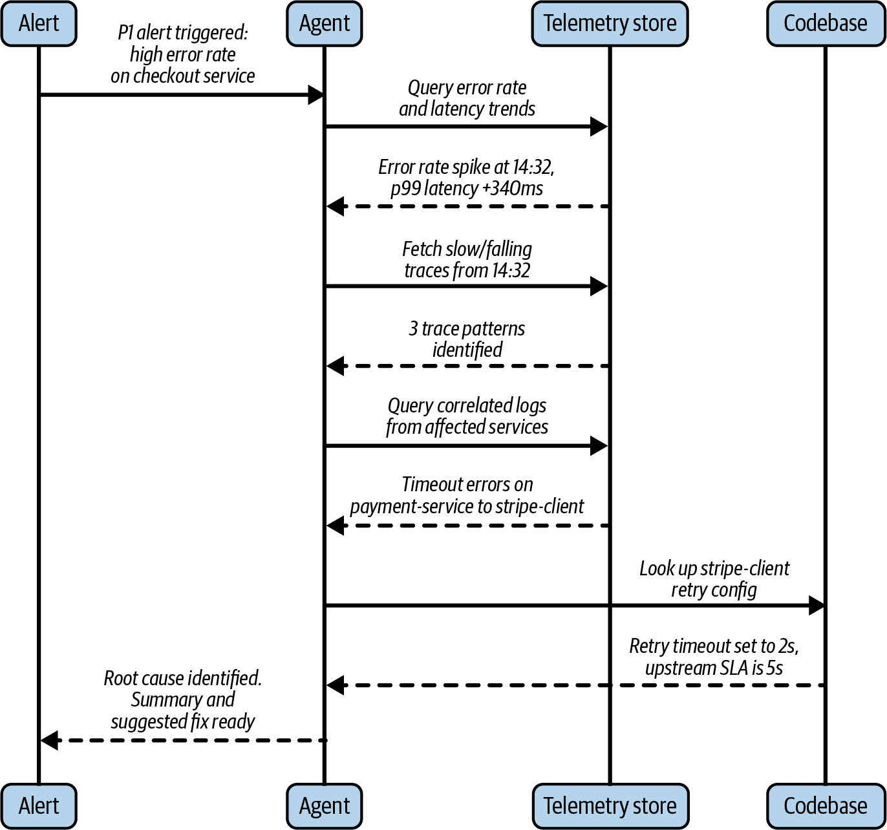
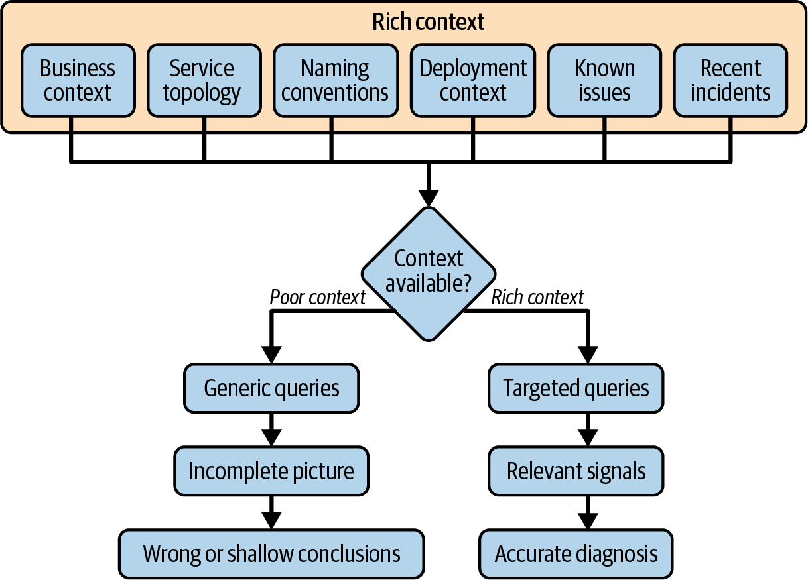

<title>第 10 章　AI 代理在可觀測性中的角色 — 《可觀測性工程》第二版</title>
<link rel="stylesheet" href="style.css">

<nav class="chapnav">
    <a href="ch09.html">← 上一章</a>
    <a href="index.html">目錄</a>
    <a href="ch11.html">下一章 →</a>
  </nav>
<main>
  <header class="masthead">
    <span class="eyebrow">Observability Engineering · Second Edition</span>
    
    <h1 class="title serif">第 10 章<br>AI 代理在可觀測性中的角色</h1>
    <div class="rule"></div>
  </header>

  <h2 class="section serif">本章由 Boris Tane 撰稿，Coreplane Labs 創辦人暨執行長</h2>
<h3 class="subsection">來自 Charity、Liz、George 與 Austin 的說明</h3>
<p>在本章中，我們將深入探討 AI 與代理在可觀測性實務中所扮演的角色，以及它們如何協助你實踐可觀測性驅動開發。</p>
<p>我們必須把這句話說出來：這是一章可能以「狗年」速度過時的內容。代理式AI 這個領域正快速演進。模型不斷改進，情境視窗持續擴大，人們建構與運作代理的方式也變化得如此之快，以至於我們給出的任何建議，等你讀到這本書時都有可能已經過時。因此，與其試圖預測工具生態的確切樣貌，我們將專注於更持久的東西：如何思考這個問題領域，以及在技術持續演進的過程中，哪些第一原理應該指引你的決策。</p>
<p>現今的代理通常受限於不完整的情境、不均衡的工具使用能力，以及工作記憶所能容納內容的限制。本章的部分建議正是基於這些限制而來。但我們希望你從本章內容學到的更深層道理，並非僅僅關於某一項限制或架構模式。</p>
<p>可觀測性向來都關乎情境與精確度之間的張力。無論是由人類還是機器所掌握，最終的結果都將持續取決於它們可取用的情境的品質、完整性與可及性。</p>
<p>必須說清楚的是，我們幾位作者並不天真地以為這個領域會停止劇烈變化的步調。然而，我們相信本章的原則在可預見的未來仍將成立：進行豐富的檢測、保留情境、設計強健的回饋迴路，並留意自動化在哪些地方能提供幫助，而在哪些地方</p>
<p>判斷才有可能實現。使用的具體工具與技術可能會改變，但對這些原則的需求不會改變。</p>
<p>本章其餘部分是以 Boris Tane 的觀點撰寫。</p>
<p>工程師理解與操作軟體的方式，正以幾年前看來還相當不切實際的方式在改變。可觀測性一直以來的目標，都是提供人類更好的工具來理解自己的系統：更好的儀表板、更好的查詢語言、更好的警報流水線。數十年來塑造軟體工程的回饋循環——撰寫、部署、觀測、修復的循環——都建立在「每個環節都有人類把關」的假設之上，由人類綜合各種訊號並判斷下一步該怎麼做。</p>
<p>這項假設正在被悄悄拆解，而這對我們理解可觀測性的方式有著重大影響。隨著 AI 代理開始加入軟體開發的行列——不僅呈現資料，還對資料進行推理、採取行動，並日益影響產生這些資料的系統本身——我們正見證整個軟體開發生命週期的轉折點。這項轉變承諾了一個由代理處理機械式調查基礎工作的世界，但這也為人類工程師帶來了一項新的、迫切的責任：提供這些系統安全運作所需的高保真度情境資訊。</p>
<p>本章將探討代理在可觀測性中的實際用途，指出其不足之處，並主張成功與失敗之間的差距，最終歸結於同一個根本問題：情境（context）。</p>
<h2 class="section serif">什麼是用於可觀測性的 AI 代理？</h2>
<p>在第 7 章中，AI 代理被定義為一種結合生成式 LLM 與某些工具子集（或透過API 公開的遠端程序呼叫）的軟體框架。就可觀測性而言，AI 代理使用 LLM 作為其推理引擎，而工具則賦予它採取行動的能力，例如查詢資料庫、呼叫其他API、撰寫並執行程式碼，或觸發自動化工作流程。</p>
<p>與單純針對單一問題做出單輪回應的聊天機器人不同，代理可以跨多個步驟追求一個目標——根據過程中所學到的東西決定下一步該做什麼，並在先前的假設被證明錯誤時調整做法。將此應用於可觀測性工作流程，意味著當警報被觸發時，代理可以依循一個複雜的決策樹，如圖 10‑1 所示。</p>
<figure class="plate">
<figcaption>圖 10‑1。此圖說明可觀測性代理在自動化事件應變工作流程中所扮演的角色。由結帳（checkout）服務的 P1 錯誤警報觸發後，代理會執行多步驟調查：分析遙測趨勢、追蹤與日誌，同時檢視程式碼設定。</figcaption></figure>
<p>在此範例中，代理識別出 stripe‑client 中的逾時設定不一致問題，並提供根因摘要與建議修正方案，展現代理如何透過複雜的跨系統關聯分析（而非單純查詢）發揮價值。</p>
<p>在圖 10‑1 中，代理的工作流程始於結帳服務高錯誤率的 P1 警報。接著可看到代理向遙測儲存區查詢錯誤率與延遲趨勢、擷取緩慢或失敗的追蹤、關聯受影響服務的日誌，並檢查程式碼庫中的設定細節。在此範例中，代理發現stripe‑client 中的重試逾時設定相對於上游 SLA 而言過低，隨後回傳根因摘要與建議修正方案。</p>
<p>只有當可觀測性代理能夠跨遙測資料與系統情境執行多步驟調查，而不僅僅是回答單一查詢時，才最能發揮效用。這個範例描繪出一幅頗具說服力的情境。雖然此範例是用來闡述這項原則，但值得注意的是，這個工作流程中的部分環節如今其實已經可行。</p>
<p>在本書出版之時，AI 代理已經能夠回應警報，並跨遙測資料與程式碼庫執行工具呼叫。當資料來源過於分散、標籤品質不佳時，代理就會顯得力不從心——導致代理陷入原地打轉，試圖對彼此無關的資料進行推理。不過，其底層技術正在快速進步中。</p>
<p>雖然這類工作流程可以做出雛形，但從「部分環節可行」到「可在正式環境大規模信賴此做法」之間，事情就會變得複雜許多。在你考慮在代理驅動的可觀測性工具之上建構任何正式的東西之前，先了解事情為何會變得複雜是很重要的。</p>
<h2 class="section serif">缺乏情境下查詢的陷阱</h2>
<p>將代理整合進可觀測性工作流程中最簡單的方式之一，就是請它查詢你的遙測資料以進行分析；換句話說，你是在把資料檢索的工作委派出去。</p>
<p>讓一個 agent 存取你的遙測資料，並以自然語言回答問題：「是什麼導致了錯誤數激增？」或「過去一小時內哪個服務的延遲最高？」或「顯示 payments服務過去 30 分鐘的所有日誌。」透過授予 LLM 存取你的遙測儲存，你可以繞過複雜查詢語言帶來的障礙。對於花費大量時間與複雜查詢語言纏鬥的團隊來說，擁有自然語言介面是實質的進步。</p>
<p>雖然這是一個很自然的起點，但這種常見 agent 整合方式的問題在於，孤立地進行查詢會產生不佳的結果。由此產生的失效模式很有啟發性，因為它們揭露了 agent 在缺乏足夠情境下運作的根本限制：</p>
<p>agent 不知道自己不知道什麼。</p>
<p>當一位經驗豐富的工程師調查事故時，他會從一個假設開始，而這個假設是由累積數週或數月的情境所形塑的。舉例來說，他知道 payments 服務在部署到某個特定下游依賴之後往往會出問題。他可能知道某個特定的上游 API 自從基礎架構團隊上一季遷移之後就一直不穩定。他也知道在一個普通的星期二下午，「正常」是什麼樣子，相對於長週末之後的星期二下午又是什麼樣子。冷啟動查詢遙測資料的 agent 完全沒有這些情境。它只會找到查詢所回傳的結果，這些結果可能是準確的，但往往離重點很遠。</p>
<p>命名在正式環境中一片混亂。</p>
<p>服務名稱由當初創建它的人來命名，而創建的時間點恰逢公司成長的哪個階段就決定了命名方式，於是名稱不斷累積而非收斂統一。你會在同一個系統中看到 user‑service、users‑svc、svc‑user 和 legacy‑user‑api 都在做相關的事情，而且文件記錄的完整程度參差不齊。如果一個代理沒有這套命名法的權威對照表，它就會從不完整或歸屬錯誤的資料中自信地得出結論，而且不會標示出這個結論可能有誤。</p>
<p>資料介面極其龐大。</p>
<p>一個中等複雜程度的生產系統，每分鐘可能會在數十個服務之間產生數百萬個跨度。如果不知道在特定情境下哪些訊號才有意義，代理要不是在噪音的海洋中漏掉真正相關的模式，就是找出一些在資料上確實存在、但在營運上毫不相干的相關性。知道該看哪裡本身就是一種專業能力，而這種專業能力必須有其來源。</p>
<p>相關性不等於因果關係，但代理經常把兩者混為一談。</p>
<p>代理（同樣地，這裡限定指使用 LLM 的代理）擅長在資料中找出模式，但它們並非天生就擅長區分「這兩件事同時發生」與「這件事導致了那件事」。在一個由數十個服務不斷互動、共同變化的分散式系統中，虛假的相關性比比皆是。如果沒有明確的拓撲模型，也沒有對系統因果結構的某種理解，那麼代理在歸因根本原因時，做的事情其實更接近有根據的猜測，而非真正的分析。</p>
<p>如果是在一個規模小、命名良好、檢測完善的系統中，服務數量少到可以在單一提示詞中推理清楚，那麼把錯誤日誌直接餵給 LLM 或許能得到出人意料的好結果。但對組織而言真正重要的系統——那些把可觀測性做對真正攸關業務命脈的系統——恰恰是那些龐大、混亂、由歷經多年、輪替不斷的團隊以各自不同慣例所建構起來的系統。而這些正是天真的代理方法最明顯崩潰的環境。</p>
<h2 class="section serif">可觀測性代理已獲驗證的使用案例</h2>
<p>代理並非只是投射在一個尚不完整的現在之上的未來承諾。在可觀測性領域，已經有一些地方確實正在創造真實的價值。理解這些領域的共通點，和理解個別的使用案例一樣有用。</p>
<p>讓我們來看看三個代理展現出高度價值、已獲驗證的使用案例。</p>
<h2 class="section serif">事件應變</h2>
<p>當警報觸發時，事件的頭 15 分鐘往往耗費在相同的機械式調查步驟上：拉出相關的儀表板、查詢最近的日誌、檢查過去幾小時內部署了什麼，以及在相依服務之間繪製出影響範圍。</p>
<p>這項工作雖然重要，但大多屬於程序性作業，非常適合交由代理程式處理。代理程式能比人類更快執行這些步驟，平行執行多個查詢，並在值班工程師還沒完全搞清楚狀況之前，就先呈現出情況的結構化摘要。</p>
<p>在這方面最好的實作方式會謹慎拿捏範圍。它們運用代理程式來輔助值班工程師，而不是試圖將整個事件排解流程從頭到尾自動化。代理程式負責調查基礎工作，人類則負責解讀摘要、運用領域判斷，並決定該採取什麼行動。以目前自主代理程式在可靠性與信任度上所處的位置而言，這樣的職責劃分既務實又恰當。</p>
<h2 class="section serif">解釋遙測資料中的錯誤與模式</h2>
<p>代理程式在可觀測性領域中最被低估的用途之一，就是「翻譯」：把原始的遙測訊號轉換成連貫、淺顯易懂的說明，解釋這些訊號代表的意義。堆疊追蹤（stack trace）、顯示級聯延遲的緩慢追蹤瀑布圖、指標分布中異常的變化——這些東西都需要真正的專業知識才能解讀，而這類專業知識在工程團隊中的分布並不均勻。</p>
<p>如果代理程式能夠檢視追蹤資訊並解釋「這顯示了一連串循序的資料庫呼叫，每一個都要等待前一個完成，這是由 ORM（物件關聯對映）設定不當所導致的典型 N+1 查詢問題」，就等於把數小時的學習與除錯過程，壓縮成一個資淺工程師能立即採取行動的內容。這不僅有助於事件應變（時間是關鍵限制），也有助於長期建立組織層面的理解，因為它能揭露出工程師平時可能沒有餘力去調查的模式。</p>
<h2 class="section serif">改善檢測品質</h2>
<p>在探討 AI 與可觀測性的討論中，使用代理程式協助檢測（instrumentation）是一個經常未受到足夠關注的應用場景，但它能為你帶來極大的長期優勢（關於如何運用代理程式改善檢測的深入探討，請參閱第 7 章）。</p>
<p>讓團隊為自己的程式碼做好檢測，實際上相當困難。開發人員在抽象層面上都明白，他們應該為跨度加上有意義的屬性、發出</p>
<p>帶有豐富上下文的包含大量屬性的結構化事件，並在服務邊界之間傳遞分散式追蹤標頭。實務上，檢測往往被視為事後才處理的工作。它由最後一個碰觸該檔案的人以不一致的方式加入，而隨著程式庫的成長以及當初制定慣例的人員異動，其品質也逐漸下降。</p>
<p>代理程式正好能填補這項落差。給定一個函式、一個服務邊界或一個 pull request，代理程式便能辨識出哪些檢測缺失、哪些結構不佳、哪些不符合團隊慣例，並正確且一致地實作改善。像是包含大量屬性的事件、恰當的屬性命名、適當的日誌等級這類最佳實務——這些原本需要多年才能累積成組織知識、且在各團隊間傳播不均——現在可以編碼進代理程式的上下文中，並在程式碼撰寫的當下就套用，而不是事後補上。</p>
<p>在這三種用例中，決定你成敗的關鍵在於你的代理程式對你的系統擁有多少上下文。若上下文不足或提示模糊，代理程式產生的輸出雖然看似合理，卻不符合系統或團隊的慣例。若指示代理程式「為這個服務加入可觀測性」，卻沒有告訴它你使用的檢測函式庫、屬性命名慣例、該服務在整體架構中的角色，或是你的日誌標準，它產生的東西雖然能編譯，卻沒有實質幫助。若擁有精確且豐富的上下文，同一個代理程式便能產生資深工程師會核准並合併、無需大幅修改的輸出。</p>
<p>順著這個脈絡，還有幾個代理程式能發揮極大效用的地方。讓我們也來看看這些用例。</p>
<h2 class="section serif">與可觀測性相關的代理程式用例</h2>
<p>除了核心的可觀測性工作流程之外，還有一整類的維運工作，長久以來團隊在這方面表現不佳，這不是因為技術上有多困難，而是因為這項工作需要持續投入注意力，卻總是被更緊急的優先事項排擠。代理十分適合處理這類工作中的許多部分。</p>
<p>警報品質在大多數工程組織中都是長年的災難。警報往往是在事件發生當下或出於焦慮而新增，很少調校（如果曾經調校過的話），並隨著時間累積成一堵噪音牆，工程師最終學會了無視它們。團隊最終會累積數百個啟用中的警報，其中許多會定期觸發，並在沒有調查的情況下被默默確認，因為每個人都知道它們沒有意義。</p>
<p>代理可以根據實際的事件歷史與流量模式，稽核警報設定，找出哪些警報與真正影響用戶的問題相關，標記出哪些警報一直觸發卻從未帶來任何有意義的行動，並根據觀察到的基準值提出具體的閾值調整建議。重要的是，這項工作可以</p>
<p>持續進行，而不是那種永遠排不進待辦清單前段的週期性清理工作。</p>
<p>服務水準目標也有類似的問題。要定義出好的 SLO，需要真正理解流量模式、歷史可靠性、錯誤類型的分佈，以及用戶實際的體驗。大多數團隊要不完全略過 SLO，要不憑直覺設定一個感覺合理的數值卻沒有數據作為依據，要不就是照抄部落格文章的範本，直接套用而不做任何調整以適配自身系統。</p>
<p>一個能夠存取歷史性能資料並擁有服務模型的代理程式，可以提出根植於觀察行為的 SLO 定義。它能夠識別哪些 SLO 即將被觸及但尚未違反，也能揭示顯示某服務正逐漸走向不可靠的趨勢，讓問題在演變成事故之前就被發現。（關於如何使用代理程式建立 SLO 的詳細說明，請見第 11 章。）</p>
<p>這兩者所代表的工作，都是團隊普遍認同其重要性、卻難以排定優先順序的類型，因為不做這些工作所付出的代價是分散且延後的。代理程式讓這類工作變得可行，因為它們消除了開始執行所需的啟動門檻，並且能夠持續運作，而不僅僅是偶爾投入注意力。</p>
<p>雖然我們前面介紹的使用案例展示了代理程式在受控情境下能提供的高槓桿效益，但其有效性從根本上仍取決於它們所處的環境。然而，隨著我們日益依賴更多自動化，我們也冒著失去那些能讓豐富情境得以提供的機構知識的風險。</p>
<h2 class="section serif">正式環境的問題：正在消失的心智模型</h2>
<p>正式環境是雜亂的，而這種雜亂是一種根本性質，而非缺乏紀律所致的失敗。服務會隨著多年來優先順序的變化、團隊的變動以及基礎設施限制的改變而不斷累積。隨著組織重組，命名也會逐漸偏移。最初打造某服務的團隊已經換過兩輪人馬，而文件（如果曾經存在的話）上次更新是在 18 個月前。一條關鍵的業務路徑橫跨四種不同的程式語言、三家雲端供應商，以及一個沒人想碰、但人人都仰賴的老舊服務。系統中存在一些只有兩個人知道的操作怪癖，而其中一人六個月前已經離職。</p>
<p>當一位經驗豐富的工程師調查正式環境問題時，他們會運用一套經過數月甚至數年與該系統打交道所累積出來的心智模型來應對這種複雜性。例如，他們了解服務的拓撲結構：哪些東西呼叫哪些其他東西、關鍵路徑在哪裡，以及哪些依賴關係是眾所皆知不可靠的。他們了解命名慣例：auth‑proxy 和api‑gateway 其實是同一個服務，端看你問的是哪個團隊，而 orders‑v2</p>
<p>儘管名稱看似不然，實際上處理結帳的是庫存服務。他們知道那段歷史：自Q3 遷移以來，庫存服務的遙測資料就一直有部分損壞，其錯誤率不能照單全收。所有這些知識都是隱性地被承載著，並形塑了他們撰寫的每一條查詢與提出的每一個假設。</p>
<p>為了讓代理在正式環境中發揮效用，它也需要取得那個心智模型，並以可供其推理的明確上下文形式呈現，如圖 10‑2 所示。</p>
<figure class="plate">
<figcaption>圖 10‑2　以可用的運維上下文為核心的決策流程。</figcaption></figure>
<p>代理可能需要關於服務拓撲、命名慣例、關鍵路徑、已知怪異行為或近期事件等概念的豐富上下文。若上下文不足，代理會發出通用查詢、得到不完整的全貌，並得出錯誤或膚淺的結論。若上下文豐富，代理便能執行針對性的查詢、辨識相關訊號，並做出準確的診斷。代理效能最大的差異化因素，並非模型本身，而是其可用運維上下文的完整性與品質。</p>
<p>可觀測性代理所需涵蓋的上下文，可能包括以下幾個不同的知識層面：</p>
<dl class="deflist"><dt>服務拓撲</dt><dd>什麼呼叫什麼、什麼依賴什麼、關鍵路徑走向何處，以及哪些服務位於系統的邊緣、哪些位於核心</dd><dt>命名慣例</dt><dd>服務名稱、別名、負責人及其實際功能的權威對應表</dd><dt>部署背景</dt><dd>最近有哪些變更、哪些服務有進行中的部署，以及風險面在何處提高</dd><dt>已知問題</dt><dd>長期存在的錯誤、狀態不佳的依賴項，以及正在維護中或以降級模式運行的服務</dd><dt>近期事件</dt><dd>過去 30 天內出了什麼問題、涉及哪些服務、服務降級持續了多久、影響範圍有多大，以及根本原因是否曾真正被確認</dd><dt>業務背景</dt><dd>特定的錯誤率或延遲變化對業務究竟意味著什麼、哪些端點是攸關營收的、以及從用戶影響的角度來看可接受的閾值是多少</dd></dl>
<p>令人不安的現實是，維護並提供這些脈絡以讓代理人能夠成功運作，這件事隨著時間推移正變得越來越困難，而非越來越容易。隨著撰寫與部署程式碼、且僅受有限人力監督的編碼代理人興起，那些原本會透過撰寫、除錯、維運軟體的日常過程建立起心智模型的工程師，正逐漸與細節脫節。程式碼被撰寫並上線的速度之快，使得任何個人都難以維持對整個系統的完整認知，而原本會透過事故與事後檢討的例行週期在服務周圍累積起來的組織知識，形成的速度也變得更慢。心智模型因此變得零碎且不完整。</p>
<p>在正式環境中運作的代理人需要彌補這種組織知識的流失。必須明確地、以可維護的形式，把工程師過去存在腦中的脈絡提供給它們。建立這一層脈絡、隨著系統演進持續更新、並在需要的當下提供給代理人取用，是這個領域中最重要、也最尚未被解決的問題之一。把這件事視為第一等工程課題來對待的團隊，會從代理人整合中獲得遠比那些認為「代理人應該自己搞懂」的團隊更多的效益。（關於提升組織學習速度的更多細節，請參見本書第六部。）</p>
<h2 class="section serif">情境的需求</h2>
<p>我們正見證軟體開發生命週期即時重塑的過程。可觀測性正處於這場轉變的核心，因為它既是代理人（agent）使用的工具，也是代理人開始進行操作的領域。數十年來，撰寫、部署、觀測、修復的循環都假設每個步驟都有人類參與。在人工智慧時代，這項假設正同時在循環中的多個環節被侵蝕。</p>
<p>編寫程式碼的代理人負責撰寫與修改程式碼。部署流水線以愈來愈少的人工檢查點，自動化通往正式環境的路徑。可觀測性代理人監控運行中的系統並呈現發現結果。工程師的角色正從直接執行轉向指揮：設定情境、審查輸出，並在自動化尚未可靠到能單獨信賴的邊界上做出判斷。</p>
<p>人工智慧的變化步調很快——快到超出大多數組織的適應能力（見第 24 章）。六個月前明顯還屬於實驗性質的工具與模式，如今已在正式環境中運行。有效的做法正在快速改變，這個領域充滿了對於正確架構與工作流程應該是什麼樣子的真實不確定性。</p>
<p>不會改變的是其底層原則：就像人類同僚一樣，代理人的表現取決於他們被賦予的情境。這在事件應變、檢測品質、警報、SLO，以及可觀測性領域的其他一切事務上都成立。能從人工智慧在其可觀測性實務中獲得最大效益的團隊，會是那些認真投資建立並維護這層情境的團隊——也就是資深工程師隨身攜帶、過去只存在於人們腦中的心智模型的機器可讀等價物。</p>
<p>工具會持續改進，模型也會愈來愈好。但情境問題仍是你必須解決的課題。</p>
<h2 class="section serif">結論</h2>
<p>Boris 對於如何在可觀測性方面駕馭快速變化的人工智慧世界，提供了一個顯著的觀點。可觀測性一直、也將持續高度依賴情境才能得出正確結論。無可避免地，在一次調查過程中，情境如何被蒐集、由誰持有，都將隨之改變。但我們相信，本章所闡述的原則即使在底層技術快速演進的情況下，仍將維持不變。</p>
<p>在下一章中，我們將介紹如何運用 SLO 進行警報並觸發調查。你將會學到，SLO 最適合用於高可觀測性系統的警報，因為它們聚焦於「誰」與「什麼」，並讓可觀測性工具自由地解釋「如何」與「為何」。</p>

  <footer class="colophon">
    <span>《可觀測性工程》第二版 · 第 10 章</span>
    <span>AI 代理在可觀測性中的角色</span>
  </footer>
</main>
